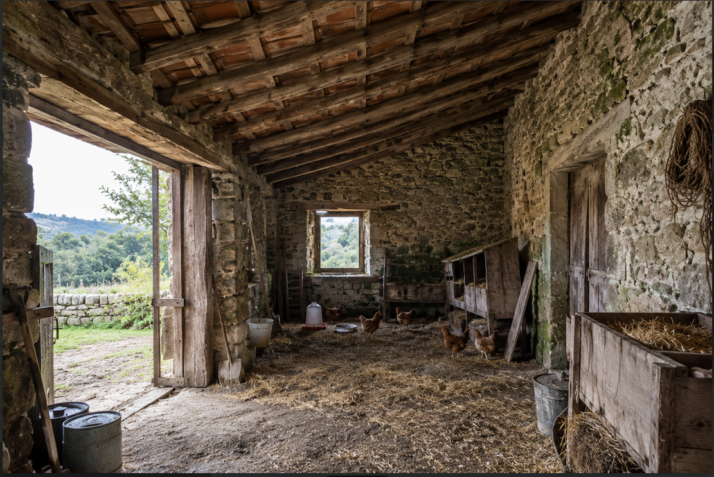
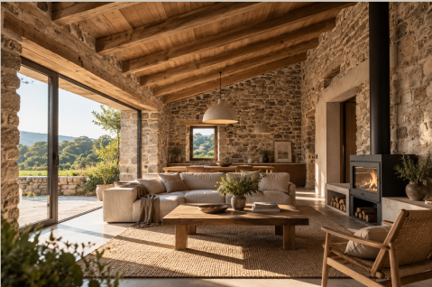
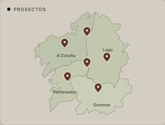
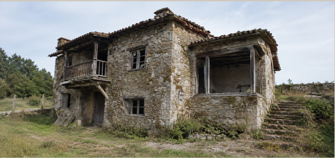
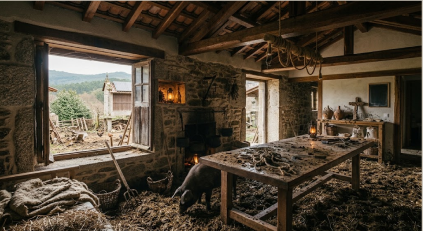
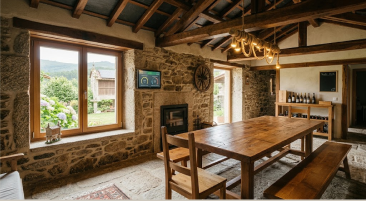
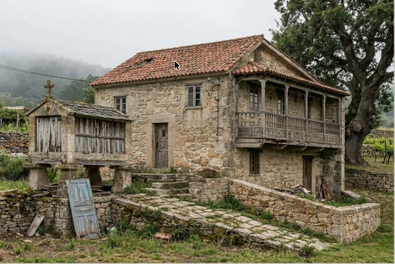
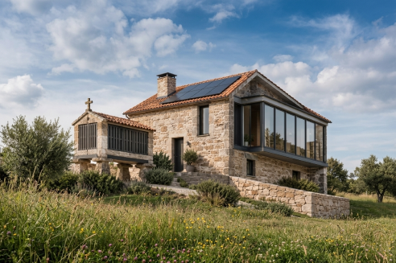

Pasa o rato para ver o resultado


Antigo galiñeiro restaurado
Ordes - 2018
2015—2026

Pasa o rato para ver o resultado


Ordes - 2018

Terra Chá-2021
Pasa o rato para ver o resultado


Ourense - 2026
Pasa o rato para ver o resultado


Pontevedra · 2020